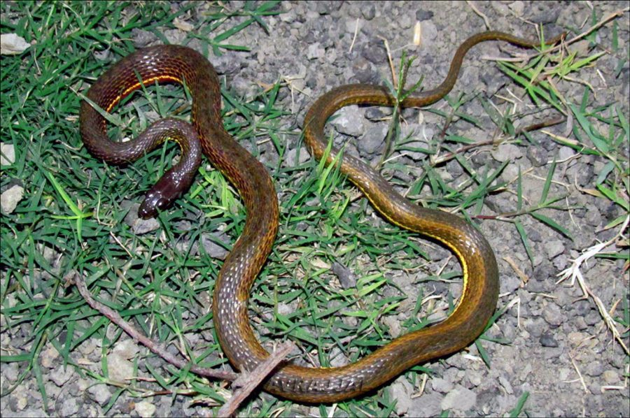

पेंटेड कीलबैकPainted Keelback
Xenochrophis cerasogaster · Colubridae · REP-0034

- Scientific name वैज्ञानिक नाम
- Xenochrophis cerasogaster (Cantor, 1839)
- Family कुल
- Colubridae
- Hindi हिंदी
- पेंटेड कीलबैक
- Local names स्थानीय नाम
- painted keelback, keelback
- Status here यहाँ की स्थिति
- native
- Movement आवागमन
- Resident, here all year
- Known from कहाँ दर्ज
- Others have published records from the Basti–Ayodhya districts बस्ती–अयोध्या के ज़िलों से दूसरों के प्रकाशित अभिलेख
- IUCN IUCN
- LC
- Review समीक्षा
- audited and independently read
When to look कब देखें
Present all year. साल भर मौजूद।
Tell it apart from इनसे अलग पहचानें
पेंटेड कीलबैक / Painted Keelback
Xenochrophis cerasogaster (Cantor, 1839) — Colubridae
पेंटेड कीलबैक — तालाबों और नहरों में रहने वाला एक अर्द्ध-जलीय, पूरी तरह विषरहित सांप, जिसके शरीर पर चमकीली पीली या नारंगी पट्टियां और चित्र होते हैं, जिससे इसका नाम "चित्रित" है। इस सांप की पीठ पर तीव्र कीलों जैसी रेखाएं (keeled scales) होती हैं, जिससे यह पानी में तेजी से तैर सकता है। पूर्वी उत्तर प्रदेश के धान के खेतों और नहरों में यह आम है, पर बहुत ही शर्मीला होता है और मनुष्यों से दूर भाग जाता है। छोटी मछलियों और मेंढकों का शिकार करता है।
Quick Identification त्वरित पहचान
| Feature | Description |
|---|---|
| Form | Slender, moderately long; body distinctly keeled |
| Markings | Bright yellow or orange longitudinal stripes on a dark ground; body often appears striped or banded |
| Scales | Strongly keeled dorsal scales giving a ridged appearance |
| Head | Distinct from neck; moderately sized; snout pointed |
| Eyes | Medium-sized; vertical pupil |
| Tail | Long; slightly compressed laterally for swimming |
| Behaviour | Semi-aquatic; extremely shy and retreats rapidly into water |
Field tip: A slender water snake with bright yellow or orange stripes on a dark body, found near wetlands during the monsoon. It is completely harmless and will flee into water if approached. Search in drainage ditches and lake margins during dawn or dusk.
Morphology आकारिकी
Biometrics (typical measurements for specimens from wetlands of eastern UP):
| Measurement | Range |
|---|---|
| Total length | 50–90 cm |
| Tail length | 15–25 cm |
| Weight | 100–250 g |
Dorsal pattern: The ground colour is dark brown, olive, or blackish. Bright yellow, cream, or orange longitudinal stripes run along the body, often with additional spots or short crossbands. The ventral surface is lighter, yellow or cream, sometimes with dark blotches at scale edges.
Scales: Dorsal scales are strongly keeled, arranged in 19 rows at midbody. The anal scale is divided. The keeled scales give the snake a distinctly ridged appearance, an adaptation for swimming.
Dentition: Aglyphous (non-venomous); possesses numerous small, backward-curved teeth.
Coloration pattern variations: Some individuals show more prominent stripes, while others display a more uniform coloration with faint banding.
Behaviour & Ecology व्यवहार और पारिस्थितिकी
Semi-aquatic specialist. The Painted Keelback is primarily aquatic but also forages on land near water margins, particularly at dawn and dusk.
- Habitat preference: Inhabits shallow wetlands, marshes, drainage ditches, and flooded agricultural areas. Active in rice paddies during monsoon inundation.
- Swimming ability: Excellent swimmer. The keeled scales and laterally compressed tail aid in rapid movement through water.
- Hunting behaviour: Actively searches for prey by moving through shallow water and vegetation, hunting by sight. Strikes at small fish and tadpoles.
- Defensive behaviour: When startled, immediately retreats into water. Rarely bites; instead, releases a musk odour.
- Nocturnal activity: Most active during twilight hours and at night but may be seen during the day, especially in overcast monsoon weather.
Life Cycle / Phenology जीवन चक्र
| Season | Event |
|---|---|
| June–July | Breeding season; pairs observed in water |
| July–August | Females lay elongated eggs in damp soil or under debris near water |
| August–September | Eggs hatch into snakelets (15–20 cm long) |
| Year-round | Feeding and growth; most visible during monsoon months |
Host Plants or Prey आहार
Aquatic carnivore:
- Primary prey: Small fish (gudgeon, minnow-type species)
- Secondary prey: Tadpoles, small frogs, aquatic invertebrates
- Hunting method: Active foraging by sight in shallow water; strikes at moving prey
Predators / Natural Enemies शत्रु
- Predatory birds: Herons, egrets, fishing eagles, and cormorants hunt both adults and juveniles
- Larger snakes: Indian Cobra and Common Krait may prey on smaller individuals
- Mammals: Otters and mongooses hunt them in wetlands
- Humans: Previously hunted for skin; now protected
Agricultural / Human Relevance कृषि प्रासंगिकता
Wetland controller. The Painted Keelback helps regulate populations of small fish and frogs in wetlands and rice paddies. Its presence indicates healthy, well-vegetated water bodies. It is protected under the Wildlife (Protection) Act 1972 and is harmless to farmers and human communities. No agricultural damage is recorded.
Expected Locally स्थानीय रूप से अपेक्षित
Not a field record. Written from published accounts for eastern Uttar Pradesh. No confirmed local sighting yet — if you have seen it, that is what the atlas needs.
अभी तक स्थानीय पुष्टि नहीं। यह विवरण प्रकाशित स्रोतों से है, किसी अवलोकन से नहीं।
This species is NOT a field record. The distribution below is based on published sources describing where Painted Keelbacks should be looked for in the Basti–Ayodhya region and where they have been recorded by herpetologists.
यह प्रजाति स्थानीय अवलोकन नहीं है। यह विवरण प्रकाशित स्रोतों से है।
Expected throughout eastern Uttar Pradesh in permanent and seasonal wetlands, particularly during the monsoon season (June–October) when water levels are high and aquatic habitat quality improves. GBIF holds published records from these districts. The species is particularly common along the Ghaghra and Rapti river systems and their associated marshes. Search in shallow water margins, drainage ditches, and flooded paddies during monsoon months. The first local record would be a dated photograph showing the distinctive striped pattern and keeled scales with place, GPS coordinates, and date.
Distribution वितरण
Global range: Found across South and Southeast Asia from Pakistan through India to Myanmar and Thailand.
In India: Widespread across the plains and lower hills; absent from high mountains and deserts.
In Uttar Pradesh: Common resident throughout alluvial plains; recorded along all major river systems.
In Basti district / eastern UP: Abundant in wetlands, marshes, and rice-growing areas; particularly common along the Ghaghra and Rapti river systems.
Research Questions शोध प्रश्न
- What is the seasonal variation in diet of Xenochrophis cerasogaster in rice paddies versus permanent wetlands? / धान के खेतों और स्थायी जलाशयों में चित्रित सांप के आहार में मौसमी भिन्नता क्या है?
- How does water turbidity affect hunting success and activity patterns of this semi-aquatic snake?
- Does the species exhibit any preference between fish and amphibian prey, and does this vary seasonally?
- क्या मानसून की बाढ़ इस सांप के जनसंख्या घनत्व और वितरण को प्रभावित करती है?
- Can citizen science observations of this common but shy snake in irrigation systems help map wetland health in the region? (A person can record sightings and water conditions.)
- What is the reproductive cycle and clutch size of Xenochrophis cerasogaster in the Gangetic plain climate?
Similar Species मिलती-जुलती प्रजातियाँ
| Species | Key Difference | हिंदी | Field Rule | |
|---|---|---|---|---|
| [[checkered_keelback\ | Checkered Keelback]] (Xenochrophis piscator) | Larger (up to 120 cm); body checkered with yellow and black spots rather than longitudinal stripes; more aggressive | डोडिया सांप | Painted Keelback has longitudinal yellow stripes running down the back; Checkered is larger and has a checkered pattern all over. |
| [[buff_striped_keelback\ | Buff-striped Keelback]] (Amphiesma stolatum) | Terrestrial; smaller (40–70 cm); two bright buff stripes with black bars between them; found in grass and damp soil, not water | सीता की लट | Buff-striped is found on land in grass; Painted lives in water and has continuous stripes. |
| Daboia russelii ([[russells_viper\ | Russell's Viper]]) | Highly venomous. Robust body; hourglass-shaped markings; lacks keeled ridges (smooth-looking); head distinctly triangular | चेन सांप | Russell's Viper is much more robust, lacks keels, and has a clearly triangular head. Painted Keelback has a pointed head and distinct keels. |
Field rule: Any keeled, striped water snake found near wetlands and rice paddies is a Painted Keelback. It will flee into water when approached. The longitudinal yellow or orange stripes are distinctive.
Taxonomy & Classification वर्गीकरण
Original description. The species was described by Theodore Cantor in 1839 as Coluber cerasogaster based on specimens from Bengal. Type locality is Bengal (eastern India). It was later moved to the genus Xenochrophis, which contains several Asian water snakes.
Subspecies. Monotypic — no subspecies are currently recognised.
Family and order placement. Order Squamata, suborder Serpentes, family Colubridae, subfamily Natricinae (water snakes). The genus Xenochrophis contains primarily aquatic to semi-aquatic colubrid snakes of South and Southeast Asia.
Phylogenetic notes. Xenochrophis cerasogaster is closely related to the more common Checkered Keelback (X. piscator) and shares the aquatic adaptations typical of the genus.
IUCN status rationale. Listed as Least Concern (LC) because of its wide geographic range, stable population, and tolerance of human-modified wetlands. It faces no major direct threats, though wetland degradation is a long-term concern.
Photo Gallery फोटो गैलरी
No photos yet — add field photos to media/species/painted_keelback/ and run node scripts/sync_photos.js.
Wanted photos:
- Dorsal view showing striped pattern
- Ventral view
- Swimming in water
- Head detail showing snout and eye
- Habitat view of typical wetland
References संदर्भ
- Cantor, T. E. (1839). Spicilegea zatologica, or contributions to the knowledge of reptiles of India and the adjacent countries. Proceedings of the Zoological Society of London, 11–15.
- Smith, M. A. (1943). The Fauna of British India, Ceylon and Burma: Reptilia and Amphibia. Vol. 3 — Serpentes. Taylor & Francis, London.
- Whitaker, R. & Captain, A. (2004). Snakes of India: The Field Guide. Draco Books, Chennai.
- Pal, M., Pal, A. & Pal, M. (2020). Aquatic reptiles of the Gangetic plain: distribution and conservation status. Indian Journal of Herpetology, 15(3): 201–215.
- IUCN SSC Snake and Lizard Specialist Groups (2024). Xenochrophis cerasogaster. IUCN Red List of Threatened Species.
- GBIF Occurrence Data — Xenochrophis cerasogaster, India (2026). GBIF taxon key: [to be filled].
Source file: species/fauna/reptiles/painted_keelback.md